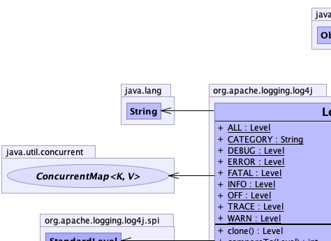
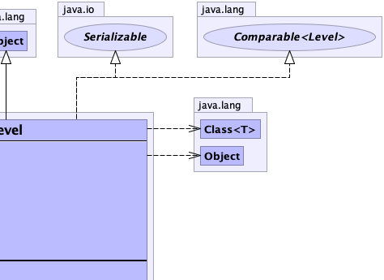
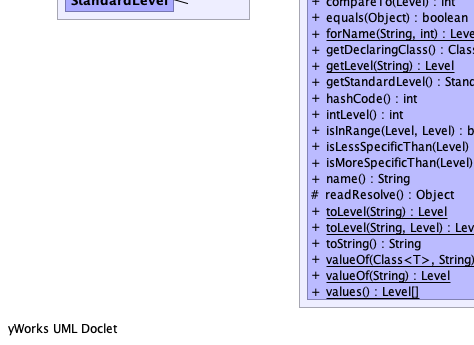
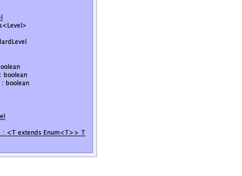

public final class Level extends java.lang.Object implements java.lang.Comparable<Level>, java.io.Serializable
OFF (most specific, no logging)FATAL (most specific, little data)ERRORWARNINFODEBUGTRACE (least specific, a lot of data)ALL (least specific, all data)ALL, is guaranteed to capture all levels when
used in logging configurations.|  |  |
|  |  |
| Modifier and Type | Field and Description |
|---|---|
static Level |
ALL
All events should be logged.
|
static java.lang.String |
CATEGORY |
static Level |
DEBUG
A general debugging event.
|
static Level |
ERROR
An error in the application, possibly recoverable.
|
static Level |
FATAL
A severe error that will prevent the application from continuing.
|
static Level |
INFO
An event for informational purposes.
|
static Level |
OFF
No events will be logged.
|
static Level |
TRACE
A fine-grained debug message, typically capturing the flow through the application.
|
static Level |
WARN
An event that might possible lead to an error.
|
| Modifier and Type | Method and Description |
|---|---|
Level |
clone() |
int |
compareTo(Level other) |
boolean |
equals(java.lang.Object other) |
static Level |
forName(java.lang.String name,
int intValue)
Retrieves an existing Level or creates on if it didn't previously exist.
|
java.lang.Class<Level> |
getDeclaringClass() |
static Level |
getLevel(java.lang.String name)
Return the Level associated with the name or null if the Level cannot be found.
|
StandardLevel |
getStandardLevel()
Gets the standard Level values as an enum.
|
int |
hashCode() |
int |
intLevel()
Gets the integral value of this Level.
|
boolean |
isInRange(Level minLevel,
Level maxLevel)
Compares this level against the levels passed as arguments and returns true if this level is in between the given
levels.
|
boolean |
isLessSpecificThan(Level level)
Compares this level against the level passed as an argument and returns true if this level is the same or is less
specific.
|
boolean |
isMoreSpecificThan(Level level)
Compares this level against the level passed as an argument and returns true if this level is the same or is more
specific.
|
java.lang.String |
name()
Gets the symbolic name of this Level.
|
protected java.lang.Object |
readResolve() |
static Level |
toLevel(java.lang.String sArg)
Converts the string passed as argument to a level.
|
static Level |
toLevel(java.lang.String name,
Level defaultLevel)
Converts the string passed as argument to a level.
|
java.lang.String |
toString() |
static <T extends java.lang.Enum<T>> |
valueOf(java.lang.Class<T> enumType,
java.lang.String name)
Returns the enum constant of the specified enum type with the specified name.
|
static Level |
valueOf(java.lang.String name)
Return the Level associated with the name.
|
static Level[] |
values()
Return an array of all the Levels that have been registered.
|
public static final Level OFF
public static final Level FATAL
public static final Level ERROR
public static final Level WARN
public static final Level INFO
public static final Level DEBUG
public static final Level TRACE
public static final Level ALL
public static final java.lang.String CATEGORY
public int intLevel()
public StandardLevel getStandardLevel()
public boolean isInRange(Level minLevel, Level maxLevel)
minLevel - The minimum level to test.maxLevel - The maximum level to test.public boolean isLessSpecificThan(Level level)
Concretely, ALL is less specific than TRACE, which is less specific than DEBUG, which
is less specific than INFO, which is less specific than WARN, which is less specific than
ERROR, which is less specific than FATAL, and finally OFF, which is the most specific
standard level.
level - The level to test.public boolean isMoreSpecificThan(Level level)
Concretely, FATAL is more specific than ERROR, which is more specific than WARN,
etc., until TRACE, and finally ALL, which is the least specific standard level.
The most specific level is OFF.
level - The level to test.public Level clone() throws java.lang.CloneNotSupportedException
clone in class java.lang.Objectjava.lang.CloneNotSupportedExceptionpublic int compareTo(Level other)
compareTo in interface java.lang.Comparable<Level>public boolean equals(java.lang.Object other)
equals in class java.lang.Objectpublic java.lang.Class<Level> getDeclaringClass()
public int hashCode()
hashCode in class java.lang.Objectpublic java.lang.String name()
toString().public java.lang.String toString()
toString in class java.lang.Objectpublic static Level forName(java.lang.String name, int intValue)
name - The name of the level.intValue - The integer value for the Level. If the level was previously created this value is ignored.java.lang.IllegalArgumentException - if the name is null or intValue is less than zero.public static Level getLevel(java.lang.String name)
name - The name of the Level.public static Level toLevel(java.lang.String sArg)
DEBUG.sArg - The name of the desired Level.public static Level toLevel(java.lang.String name, Level defaultLevel)
defaultLevel.name - The name of the desired Level.defaultLevel - The Level to use if the String is invalid.public static Level[] values()
public static Level valueOf(java.lang.String name)
name - The name of the Level to return.java.lang.NullPointerException - if the Level name is null.java.lang.IllegalArgumentException - if the Level name is not registered.public static <T extends java.lang.Enum<T>> T valueOf(java.lang.Class<T> enumType,
java.lang.String name)
T - The enum type whose constant is to be returnedenumType - the Class object of the enum type from which to return a constantname - the name of the constant to returnjava.lang.IllegalArgumentException - if the specified enum type has no constant with the specified name, or
the specified class object does not represent an enum typejava.lang.NullPointerException - if enumType or name are nullEnum.valueOf(Class, String)protected java.lang.Object readResolve()